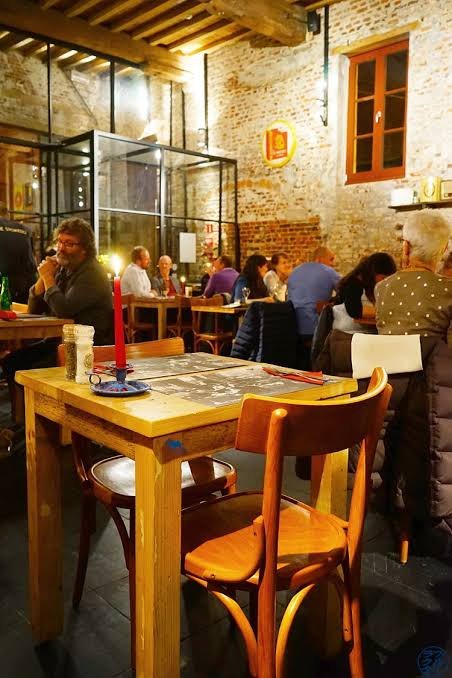

CityLoop Quest Gand


À Gand, manger commence souvent par le marché. Le vendredi et le samedi, différents étals animent le centre, tandis que le Kouter conserve son marché aux fleurs du dimanche. Le Groentenmarkt, malgré son nom de marché aux légumes, est aujourd’hui surtout entouré de commerces gourmands et de terrasses. Les produits régionaux se découvrent aussi dans les halles et petites boutiques : fromages, pains, bières, moutarde et confiseries sont plus intéressants lorsqu’ils sont reliés à un producteur identifiable.
La culture de la friterie reste très vivante. On commande généralement les frites au comptoir, accompagnées d’une sauce choisie parmi une liste parfois vertigineuse. Certaines baraques deviennent des institutions de quartier et chacun défend sa préférée. La portion peut servir de repas rapide ou d’accompagnement à un stoofvlees. Pour juger la qualité, regardez le débit : une huile entretenue et des fournées régulières valent souvent mieux qu’un décor spectaculaire.
Les cafés gantois n’ont pas tous la même fonction. Autour du centre, les terrasses offrent la vue ; dans les quartiers étudiants, elles accueillent discussions, concerts et associations ; près des anciens docks, de nouveaux lieux combinent torréfaction, cuisine et programmation culturelle. La bière se déguste en prenant le temps de lire le degré d’alcool, car les spécialités belges peuvent être trompeusement douces. Demander une bière locale ou une petite dégustation permet d’éviter la course aux marques les plus connues.
Le repas végétarien occupe une place notable. Gand a lancé en 2009 une journée hebdomadaire encourageant une alimentation sans viande, initiative qui a renforcé une offre déjà inventive. Restaurants, cantines et cafés proposent aujourd’hui des plats végétariens qui ne se limitent pas à remplacer la viande. Cette orientation correspond à l’identité universitaire et écologique de la ville, sans faire disparaître les cuisines traditionnelles.
Les heures de service demandent un minimum d’attention. Le déjeuner se prend souvent entre midi et 14 heures, et certaines cuisines ferment plus tôt qu’en Europe méridionale. Le soir, réserver est prudent dans le Patershol et pendant les Gentse Feesten. Une bonne journée gourmande peut alterner un café matinal, une spécialité achetée au marché, un repas simple et un dessert pris en marchant. La ville se prête à cette progression parce que les distances du centre restent courtes.
Le matin possède ses propres codes. Une boulangerie fréquentée vend croissants, pains au chocolat, pistolets et koffiekoeken, souvent emportés plutôt que consommés sur place. Le dimanche, le Kouter combine fleurs, journaux, huîtres et verre de vin blanc pour ceux qui prolongent la promenade. Ce rituel n’a rien d’une attraction programmée : il fonctionne parce que les habitants y viennent réellement. Arriver avant la fin de matinée permet d’en saisir l’ambiance sans se retrouver seulement devant des étals qui remballent.
Le soir, les habitudes changent selon les quartiers. Les restaurants du Patershol demandent souvent une réservation, tandis que les rues étudiantes privilégient repas rapides et cafés animés. Dans un estaminet, il est parfaitement normal de rester devant une bière en discutant longuement, mais une terrasse très demandée attend un minimum de consommation. Le service peut paraître direct sans être froid. Une bonne règle consiste à demander la spécialité de la maison plutôt que « le plat le plus typique » : la réponse sera plus précise et évitera les menus conçus uniquement pour photographier une tradition.
Gand possède aussi une solide culture du repas partagé. Les grandes tables, les soupes, les assiettes à diviser et les longues conversations conviennent à une ville où étudiants, familles et associations se croisent beaucoup. L’addition est généralement apportée à la demande plutôt que déposée dès la dernière bouchée. Le pourboire n’est pas obligatoire comme dans certains pays, mais arrondir ou laisser un complément pour un service attentif reste apprécié. Surtout, personne ne gagne à presser un repas gantois.